The dataset was loaded using the read_excel function
from the “Survey_Data_1.xlsx” file. To understand the structure and
contents of the dataset, the str() function was used to
display the structure, which provides information about the data types
and the number of observations in each column. A more detailed view was
obtained using the glimpse() function, which gives a quick
overview of the dataset.
Summary statistics were then generated using the
summary() function, providing key metrics such as mean,
median, and quartiles for numerical columns, as well as counts for
categorical columns. Lastly, to ensure data quality, the presence of
missing values in each column was checked using the
colSums(is.na(data)) function. This step is crucial for
identifying potential data preprocessing needs before further
analysis.
# Load the dataset
data <- read_excel("Survey_Data_1.xlsx")
# Display the structure of the dataset
str(data)## tibble [1,000 × 22] (S3: tbl_df/tbl/data.frame)
## $ ID : num [1:1000] 1 2 3 4 5 6 7 8 9 10 ...
## $ Gender : chr [1:1000] "male" "male" "male" "male" ...
## $ Coded Gender : num [1:1000] 1 1 1 1 0 0 1 1 1 0 ...
## $ Marital Status : chr [1:1000] "married" "single" "married" "married" ...
## $ Work Status : chr [1:1000] "professional" "none" "professional" "none" ...
## $ Education : chr [1:1000] "none" "none" "BA" "PhD" ...
## $ Ed coded : num [1:1000] 0 0 1 3 0 1 0 0 0 0 ...
## $ Annual Income (x1000 $) : num [1:1000] 49 46 58 51 46 31 33 29 57 30 ...
## $ Age : num [1:1000] 30 36 66 78 52 72 62 30 60 59 ...
## $ Location : chr [1:1000] "Florida" "Alabama" "Massachusetts" "New York" ...
## $ Purchasing Decision Maker : chr [1:1000] "family" "single" "family" "family" ...
## $ Purchasing Location : chr [1:1000] "mass-consumer electronics" "mass-consumer electronics" "specialty stores" "mass-consumer electronics" ...
## $ PL coded : num [1:1000] 1 1 2 1 1 3 4 3 2 4 ...
## $ Monthly Electronics Spend : num [1:1000] 35 35 64 33 45 14 18 23 74 16 ...
## $ Annual spending on electronics : num [1:1000] 420 420 768 396 540 168 216 276 888 192 ...
## $ Spending as % of income : num [1:1000] 0.00857 0.00913 0.01324 0.00776 0.01174 ...
## $ Monthly Household Spend : num [1:1000] 150 163 103 154 161 21 40 75 358 78 ...
## $ Purchasing Frequency (every x months): num [1:1000] 13 26 13 22 47 32 41 9 1 25 ...
## $ Technology Adoption : chr [1:1000] "late" "late" "early" "late" ...
## $ TV Viewing (hours/day) : num [1:1000] 2 10 0 5 2 1 0 1 0 0 ...
## $ Favorite feature : chr [1:1000] "saving favorite shows to watch as a family" "saving favorite shows to watch as a family" "time shifting" "saving favorite shows to watch as a family" ...
## $ FF coded : num [1:1000] 1 1 2 1 1 2 3 4 4 4 ...## Rows: 1,000
## Columns: 22
## $ ID <dbl> 1, 2, 3, 4, 5, 6, 7, 8, 9, 10, 11, 12, 13, 14, 15, 16, 17, 18, 19, 20, 21, 22, 23,…
## $ Gender <chr> "male", "male", "male", "male", "female", "female", "male", "male", "male", "femal…
## $ `Coded Gender` <dbl> 1, 1, 1, 1, 0, 0, 1, 1, 1, 0, 0, 0, 1, 0, 1, 0, 1, 0, 0, 0, 0, 1, 0, 1, 1, 1, 1, 1…
## $ `Marital Status` <chr> "married", "single", "married", "married", "single", "married", "married", "marrie…
## $ `Work Status` <chr> "professional", "none", "professional", "none", "none", "none", "professional", "n…
## $ Education <chr> "none", "none", "BA", "PhD", "none", "BA", "none", "none", "none", "none", "PhD", …
## $ `Ed coded` <dbl> 0, 0, 1, 3, 0, 1, 0, 0, 0, 0, 3, 0, 1, 0, 0, 0, 1, 0, 3, 0, 2, 0, 0, 0, 1, 0, 0, 0…
## $ `Annual Income (x1000 $)` <dbl> 49, 46, 58, 51, 46, 31, 33, 29, 57, 30, 29, 49, 64, 27, 27, 33, 31, 28, 29, 28, 50…
## $ Age <dbl> 30, 36, 66, 78, 52, 72, 62, 30, 60, 59, 25, 57, 80, 36, 61, 54, 58, 30, 25, 58, 75…
## $ Location <chr> "Florida", "Alabama", "Massachusetts", "New York", "Montana", "New Jersey", "Calif…
## $ `Purchasing Decision Maker` <chr> "family", "single", "family", "family", "single", "single", "single", "single", "f…
## $ `Purchasing Location` <chr> "mass-consumer electronics", "mass-consumer electronics", "specialty stores", "mas…
## $ `PL coded` <dbl> 1, 1, 2, 1, 1, 3, 4, 3, 2, 4, 4, 1, 2, 4, 3, 3, 4, 4, 3, 3, 1, 4, 1, 1, 3, 4, 3, 4…
## $ `Monthly Electronics Spend` <dbl> 35, 35, 64, 33, 45, 14, 18, 23, 74, 16, 38, 46, 53, 16, 14, 14, 16, 14, 24, 17, 47…
## $ `Annual spending on electronics` <dbl> 420, 420, 768, 396, 540, 168, 216, 276, 888, 192, 456, 552, 636, 192, 168, 168, 19…
## $ `Spending as % of income` <dbl> 0.008571429, 0.009130435, 0.013241379, 0.007764706, 0.011739130, 0.005419355, 0.00…
## $ `Monthly Household Spend` <dbl> 150, 163, 103, 154, 161, 21, 40, 75, 358, 78, 66, 225, 257, 48, 60, 24, 44, 66, 10…
## $ `Purchasing Frequency (every x months)` <dbl> 13, 26, 13, 22, 47, 32, 41, 9, 1, 25, 2, 20, 10, 8, 39, 16, 14, 8, 11, 16, 17, 15,…
## $ `Technology Adoption` <chr> "late", "late", "early", "late", "late", "early", "early", "early", "early", "earl…
## $ `TV Viewing (hours/day)` <dbl> 2, 10, 0, 5, 2, 1, 0, 1, 0, 0, 6, 5, 1, 2, 1, 0, 1, 2, 5, 0, 8, 1, 5, 8, 6, 2, 2, …
## $ `Favorite feature` <chr> "saving favorite shows to watch as a family", "saving favorite shows to watch as a…
## $ `FF coded` <dbl> 1, 1, 2, 1, 1, 2, 3, 4, 4, 4, 5, 1, 3, 4, 3, 3, 3, 3, 5, 2, 1, 3, 1, 1, 5, 4, 3, 4…## ID Gender Coded Gender Marital Status Work Status Education Ed coded
## Min. : 1.0 Length:1000 Min. :0.000 Length:1000 Length:1000 Length:1000 Min. :0.000
## 1st Qu.: 250.8 Class :character 1st Qu.:0.000 Class :character Class :character Class :character 1st Qu.:0.000
## Median : 500.5 Mode :character Median :1.000 Mode :character Mode :character Mode :character Median :0.000
## Mean : 500.5 Mean :0.535 Mean :0.838
## 3rd Qu.: 750.2 3rd Qu.:1.000 3rd Qu.:1.000
## Max. :1000.0 Max. :1.000 Max. :3.000
## Annual Income (x1000 $) Age Location Purchasing Decision Maker Purchasing Location PL coded
## Min. : 21.00 Min. :18.00 Length:1000 Length:1000 Length:1000 Min. :1.000
## 1st Qu.: 29.00 1st Qu.:32.00 Class :character Class :character Class :character 1st Qu.:2.000
## Median : 33.00 Median :49.00 Mode :character Mode :character Mode :character Median :3.000
## Mean : 39.01 Mean :48.34 Mean :2.809
## 3rd Qu.: 48.25 3rd Qu.:63.00 3rd Qu.:4.000
## Max. :730.00 Max. :80.00 Max. :5.000
## Monthly Electronics Spend Annual spending on electronics Spending as % of income Monthly Household Spend
## Min. : 7.00 Min. : 84.0 Min. :0.001031 Min. : 10.00
## 1st Qu.:17.00 1st Qu.: 204.0 1st Qu.:0.006743 1st Qu.: 47.00
## Median :25.50 Median : 306.0 Median :0.008769 Median : 73.00
## Mean :30.96 Mean : 371.5 Mean :0.009418 Mean : 94.24
## 3rd Qu.:42.00 3rd Qu.: 504.0 3rd Qu.:0.011767 3rd Qu.:124.00
## Max. :88.00 Max. :1056.0 Max. :0.019556 Max. :390.00
## Purchasing Frequency (every x months) Technology Adoption TV Viewing (hours/day) Favorite feature FF coded
## Min. : 1.00 Length:1000 Min. : 0.00 Length:1000 Min. :1.00
## 1st Qu.:11.00 Class :character 1st Qu.: 1.00 Class :character 1st Qu.:2.00
## Median :22.00 Mode :character Median : 1.00 Mode :character Median :3.00
## Mean :22.99 Mean : 2.37 Mean :2.86
## 3rd Qu.:35.00 3rd Qu.: 2.00 3rd Qu.:4.00
## Max. :48.00 Max. :14.00 Max. :5.00## ID Gender Coded Gender
## 0 0 0
## Marital Status Work Status Education
## 0 0 0
## Ed coded Annual Income (x1000 $) Age
## 0 0 0
## Location Purchasing Decision Maker Purchasing Location
## 0 0 0
## PL coded Monthly Electronics Spend Annual spending on electronics
## 0 0 0
## Spending as % of income Monthly Household Spend Purchasing Frequency (every x months)
## 0 0 0
## Technology Adoption TV Viewing (hours/day) Favorite feature
## 0 0 0
## FF coded
## 0To prepare the dataset for analysis, the column names were
standardized by removing non-alphanumeric characters. This was achieved
using the gsub function, which eliminated any characters
that were not letters, numbers, or underscores. This step ensures that
the column names are consistent and easier to reference in subsequent
analyses, reducing the likelihood of errors. The modified column names
were then printed to verify the changes, confirming the successful
standardization of the dataset’s structure.
# Modify column names
colnames(data) <- gsub("[^A-Za-z0-9_]+", "", colnames(data)) # Remove non-alphanumeric characters
# Print modified column names
print(colnames(data))## [1] "ID" "Gender" "CodedGender"
## [4] "MaritalStatus" "WorkStatus" "Education"
## [7] "Edcoded" "AnnualIncomex1000" "Age"
## [10] "Location" "PurchasingDecisionMaker" "PurchasingLocation"
## [13] "PLcoded" "MonthlyElectronicsSpend" "Annualspendingonelectronics"
## [16] "Spendingasofincome" "MonthlyHouseholdSpend" "PurchasingFrequencyeveryxmonths"
## [19] "TechnologyAdoption" "TVViewinghoursday" "Favoritefeature"
## [22] "FFcoded"To understand the distribution of key numerical variables in the
dataset, we selected six important metrics: “Annual Income (x1000)”,
“Monthly Electronics Spend”, “Annual Spending on Electronics”, “Age”,
“Monthly Household Spend”, and “Purchasing Frequency (every x months)”.
Histograms were generated for each of these variables, providing a
visual representation of their frequency distributions. The histograms
were created using the ggplot2 package, with 20 bins for
each variable, and were color-coded for clarity. The plots were then
arranged in a grid for easy comparison and interpretation of the data
distributions.
# Select numerical variables for visualization
numerical_variables <- c("AnnualIncomex1000", "MonthlyElectronicsSpend",
"Annualspendingonelectronics", "Age", "MonthlyHouseholdSpend",
"PurchasingFrequencyeveryxmonths")
# Create histograms for each numerical variable
histograms <- lapply(numerical_variables, function(variable) {
ggplot(data, aes(x = .data[[variable]])) +
geom_histogram(fill = "skyblue", color = "black", bins = 20) +
labs(title = paste("Histogram of", variable),
x = variable, y = "Frequency")
})
# Plot the histograms
grid.arrange(grobs = histograms, ncol = 3)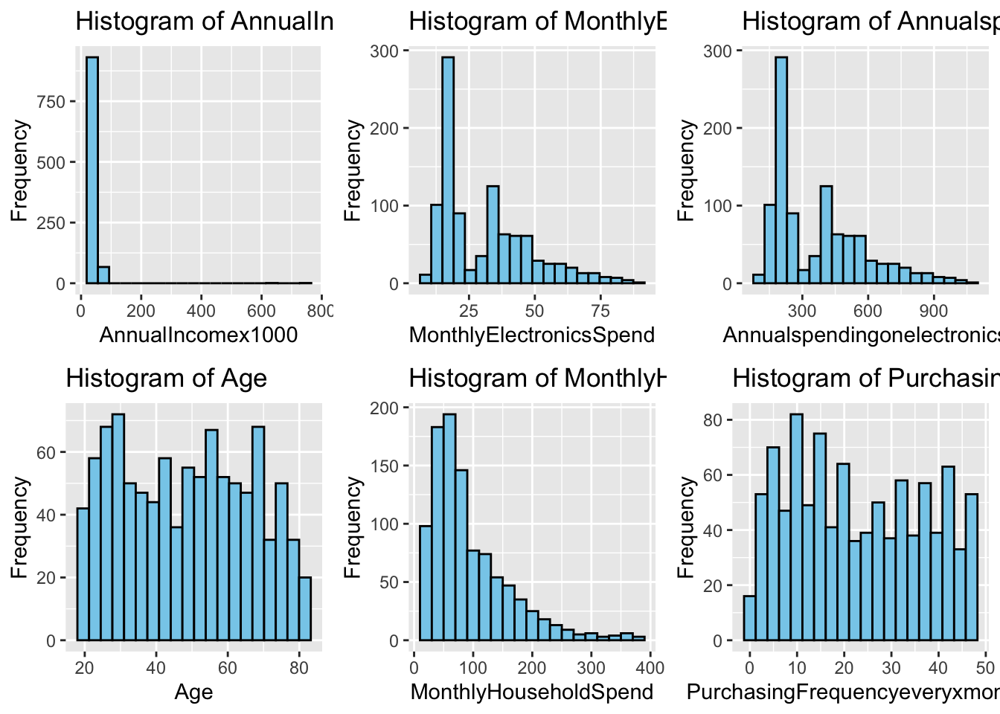
[1] “ID” “Gender” “CodedGender” “MaritalStatus” “WorkStatus”
[6] “Education” “Edcoded” “AnnualIncomex1000” “Age” “Location”
[11] “PurchasingDecisionMaker” “PurchasingLocation” “PLcoded”
“MonthlyElectronicsSpend” “Annualspendingonelectronics”
[16] “Spendingasofincome” “MonthlyHouseholdSpend”
“PurchasingFrequencyeveryxmonths” “TechnologyAdoption”
“TVViewinghoursday”
[21] “Favoritefeature” “FFcoded”
To analyze the distribution of categorical variables in the dataset,
we selected eight key categories: “Marital Status”, “Work Status”,
“Purchasing Decision Maker”, “Technology Adoption”, “Coded Gender”,
“Education Code (Edcoded)”, “Favorite Feature Code (FFcoded)”, and
“Product Loyalty Code (PLcoded)”. For each categorical variable, bar
plots were generated to visualize the frequency counts of each category.
The ggplot2 package was used to create these bar plots,
with a consistent color scheme for clarity. The plots were arranged in a
2-column grid format to facilitate easy comparison and interpretation of
the data distributions across different categories.
# Select categorical variables for visualization
categorical_variables <- c("MaritalStatus", "WorkStatus", "PurchasingDecisionMaker", "TechnologyAdoption",
"CodedGender", "Edcoded", "FFcoded", "PLcoded")
# Create bar plots for each categorical variable
bar_plots <- lapply(categorical_variables, function(variable) {
# Calculate counts for each category
category_counts <- data %>%
count(!!sym(variable))
# Create bar plot using ggplot2
ggplot(category_counts, aes(x = !!sym(variable), y = n)) +
geom_bar(stat = "identity", fill = "skyblue", color = "black") + # Use stat="identity" for raw counts
labs(title = paste("Bar Plot of", variable),
x = variable, y = "Count")
})
# Plot the bar plots in a 2-column grid
gridExtra::grid.arrange(grobs = bar_plots, ncol = 2)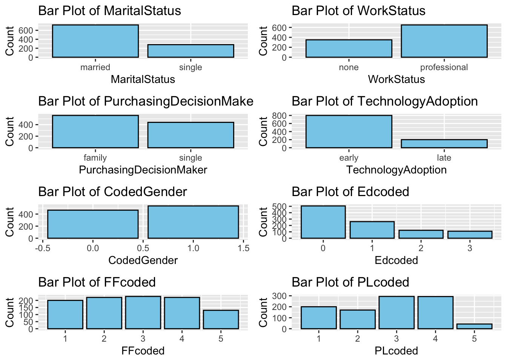
To understand the categorical variables in the dataset, we identified the unique values for each categorical column. This involved selecting columns with character data types and extracting their unique values. By iterating through these columns and printing their unique values, we gained insights into the distinct categories present in each variable. This step was essential for determining the appropriate encoding strategy to convert these categorical variables into a format suitable for further analysis, such as one-hot encoding or label encoding.
# Identify unique values for each categorical variable
unique_values <- lapply(data[, sapply(data, is.character)], unique)
# Explore unique values and decide encoding strategy
for (col in names(unique_values)) {
cat("Unique values for", col, ":", unique_values[[col]], "\n")
}## Unique values for Gender : male female
## Unique values for MaritalStatus : married single
## Unique values for WorkStatus : professional none
## Unique values for Education : none BA PhD MA
## Unique values for Location : Florida Alabama Massachusetts New York Montana New Jersey California New Hampshire Idaho Nevada Illinois Maine Alaska South Dakota Colorado Hawaii Washington Delaware Wyoming Rhode Island Pennsylvania Tennessee Missouri Vermont Oregon Connecticut North Carolina Maryland Nebraska Georgia Arkansas Arizona Iowa Kansas Ohio Louisiana North Dakota Kentucky New Mexico Texas South Carolina Utah Michigan West Virginia Wisconsin Indiana Virginia Mississippi Minnesota Oklahoma
## Unique values for PurchasingDecisionMaker : family single
## Unique values for PurchasingLocation : mass-consumer electronics specialty stores retail discount web (ebay)
## Unique values for TechnologyAdoption : late early
## Unique values for Favoritefeature : saving favorite shows to watch as a family time shifting cool gadget schedule control programming/interactive features[1] “ID” “Gender” “CodedGender” “MaritalStatus” “WorkStatus”
[6] “Education” “Edcoded” “AnnualIncomex1000” “Age” “Location”
[11] “PurchasingDecisionMaker” “PurchasingLocation” “PLcoded”
“MonthlyElectronicsSpend” “Annualspendingonelectronics”
[16] “Spendingasofincome” “MonthlyHouseholdSpend”
“PurchasingFrequencyeveryxmonths” “TechnologyAdoption”
“TVViewinghoursday”
[21] “Favoritefeature” “FFcoded”
In this data processing workflow, the target mean encoding technique effectively transformed the categorical Location variable into a continuous numeric variable based on the mean of the Monthly_Electronic_Spend. This method ensures that the “Location” variable is represented in a manner suitable for subsequent analysis.
Selected categorical variables—“Marital Status,” “Work Status,”
“Purchasing Decision Maker,” and “Technology Adoption”—were one-hot
encoded. This process converts these categorical values into binary
format, allowing them to be used in various machine learning algorithms.
Furthermore, the “TV Viewing (hours/day)” variable, an ordinal variable,
was scaled to normalize its values, making it ready for clustering and
other analytical methods. The Location variable was also
encoded using mapping.
The processed dataset was then combined with the original data, incorporating the newly generated dummy variables and the scaled TV viewing data. Following this, redundant columns were removed. These included the original categorical columns that had been one-hot encoded, the original “TV Viewing (hours/day)” column, “ID,” “Gender,” and temporary columns created during frequency encoding. This cleanup ensures the final dataset is streamlined and prepared for advanced analysis.
# Calculate the mean of Monthly_Electronic_Spend for each Location
mean_by_location <- data %>%
group_by(Location) %>%
summarise(Location_mean = mean(MonthlyElectronicsSpend, na.rm = TRUE))
# Replace Location with the mean target values
data <- data %>%
left_join(mean_by_location, by = "Location") %>%
dplyr::select(-Location) %>%
rename(Location_mean_encoding = Location_mean)
# Print the transformed data
print(data)## # A tibble: 1,000 × 22
## ID Gender CodedGender MaritalStatus WorkStatus Education Edcoded AnnualIncomex1000 Age PurchasingDecisionMaker
## <dbl> <chr> <dbl> <chr> <chr> <chr> <dbl> <dbl> <dbl> <chr>
## 1 1 male 1 married professional none 0 49 30 family
## 2 2 male 1 single none none 0 46 36 single
## 3 3 male 1 married professional BA 1 58 66 family
## 4 4 male 1 married none PhD 3 51 78 family
## 5 5 female 0 single none none 0 46 52 single
## 6 6 female 0 married none BA 1 31 72 single
## 7 7 male 1 married professional none 0 33 62 single
## 8 8 male 1 married none none 0 29 30 single
## 9 9 male 1 married professional none 0 57 60 family
## 10 10 female 0 married professional none 0 30 59 family
## # ℹ 990 more rows
## # ℹ 12 more variables: PurchasingLocation <chr>, PLcoded <dbl>, MonthlyElectronicsSpend <dbl>, Annualspendingonelectronics <dbl>,
## # Spendingasofincome <dbl>, MonthlyHouseholdSpend <dbl>, PurchasingFrequencyeveryxmonths <dbl>, TechnologyAdoption <chr>,
## # TVViewinghoursday <dbl>, Favoritefeature <chr>, FFcoded <dbl>, Location_mean_encoding <dbl>[1] “ID” “Gender” “CodedGender” “MaritalStatus” “WorkStatus”
[6] “Education” “Edcoded” “AnnualIncomex1000” “Age” “Location”
[11] “PurchasingDecisionMaker” “PurchasingLocation” “PLcoded”
“MonthlyElectronicsSpend” “Annualspendingonelectronics”
[16] “Spendingasofincome” “MonthlyHouseholdSpend”
“PurchasingFrequencyeveryxmonths” “TechnologyAdoption”
“TVViewinghoursday”
[21] “Favoritefeature” “FFcoded”
We performed the encoding of categorical and ordinal variables to prepare the dataset for analysis. The steps involved were:
One-Hot Encoding: We defined a function
one_hot_encode to convert categorical variables into
one-hot encoded variables. This function utilizes the
dummyVars function from the caret package to
create dummy variables. We applied this function to specific categorical
columns (MaritalStatus, WorkStatus,
PurchasingDecisionMaker, TechnologyAdoption),
generating a new dataframe with the encoded variables.
Scaling an Ordinal Variable: We scaled the
ordinal variable TVViewinghoursday using standard scaling
(mean-centering and variance-scaling). This transformation ensures that
the variable has a mean of zero and a standard deviation of one, making
it suitable for further analysis such as Principal Component Analysis
(PCA).
Combining Encoded Data: We combined the original
dataset, excluding the unwanted columns, with the one-hot encoded
variables and the scaled TVViewinghoursday variable. This
resulted in a final prepared dataset (data_final) that is
ready for subsequent analyses, such as clustering or PCA.
These steps ensure that all variables are appropriately transformed, facilitating accurate and meaningful analyses.
# Define a function to perform one-hot encoding
one_hot_encode <- function(data, cols) {
dummy_model <- dummyVars(~., data = data[cols])
dummy_data <- predict(dummy_model, newdata = data)
return(as.data.frame(dummy_data))
}
# Encode categorical variables
categorical_cols <- c("MaritalStatus", "WorkStatus", "PurchasingDecisionMaker", "TechnologyAdoption")
encoded_data <- one_hot_encode(data, categorical_cols) # Use data_encoded here
# Encode ordinal variable (TV Viewing) using scaling
tv_viewing_scaled <- scale(data$TVViewinghoursday, center = TRUE, scale = TRUE) # Use data_encoded here
# Combine original data (exclude unwanted columns) with encoded variables and scaled TV viewing
data_final <- cbind(data[setdiff(names(data), c(categorical_cols, "Education", "PurchasingLocation", "Favoritefeature", "Gender", "ID","TVViewinghoursday"))], encoded_data, tv_viewing_scaled)
# Display the encoded data with unwanted columns removed
head(data_final)## CodedGender Edcoded AnnualIncomex1000 Age PLcoded MonthlyElectronicsSpend Annualspendingonelectronics Spendingasofincome
## 1 1 0 49 30 1 35 420 0.008571429
## 2 1 0 46 36 1 35 420 0.009130435
## 3 1 1 58 66 2 64 768 0.013241379
## 4 1 3 51 78 1 33 396 0.007764706
## 5 0 0 46 52 1 45 540 0.011739130
## 6 0 1 31 72 3 14 168 0.005419355
## MonthlyHouseholdSpend PurchasingFrequencyeveryxmonths FFcoded Location_mean_encoding MaritalStatusmarried MaritalStatussingle
## 1 150 13 1 28.74286 1 0
## 2 163 26 1 33.83333 0 1
## 3 103 13 2 30.34211 1 0
## 4 154 22 1 32.56410 1 0
## 5 161 47 1 34.42857 0 1
## 6 21 32 2 30.48571 1 0
## WorkStatusnone WorkStatusprofessional PurchasingDecisionMakerfamily PurchasingDecisionMakersingle TechnologyAdoptionearly
## 1 0 1 1 0 0
## 2 1 0 0 1 0
## 3 0 1 1 0 1
## 4 1 0 1 0 0
## 5 1 0 0 1 0
## 6 1 0 0 1 1
## TechnologyAdoptionlate tv_viewing_scaled
## 1 1 -0.1271367
## 2 1 2.6217656
## 3 0 -0.8143623
## 4 1 0.9037017
## 5 1 -0.1271367
## 6 0 -0.4707495To enhance our dataset and provide more comprehensive insights, we
created a new feature called Total_Monthly_Spend. This was
achieved by summing up the MonthlyElectronicsSpend and
MonthlyHouseholdSpend for each record. The procedure was as
follows:
Column Existence Check: We verified the
existence of the necessary columns (MonthlyElectronicsSpend
and MonthlyHouseholdSpend) in the data_final
dataframe to ensure that they were available for the
calculation.
Feature Creation: If both columns were present,
we created the new feature Total_Monthly_Spend by adding
the values of MonthlyElectronicsSpend and
MonthlyHouseholdSpend.
# Check if the necessary columns exist in the data_final dataframe
if ("MonthlyElectronicsSpend" %in% colnames(data_final) && "MonthlyHouseholdSpend" %in% colnames(data_final)) {
# Create new feature: Total Monthly Spend
data_final$Total_Monthly_Spend <- data_final$MonthlyElectronicsSpend + data_final$MonthlyHouseholdSpend
} else {
# Print error message if the necessary columns are missing
print("Error: Required columns not found.")
}
# Display data
head(data_final)## CodedGender Edcoded AnnualIncomex1000 Age PLcoded MonthlyElectronicsSpend Annualspendingonelectronics Spendingasofincome
## 1 1 0 49 30 1 35 420 0.008571429
## 2 1 0 46 36 1 35 420 0.009130435
## 3 1 1 58 66 2 64 768 0.013241379
## 4 1 3 51 78 1 33 396 0.007764706
## 5 0 0 46 52 1 45 540 0.011739130
## 6 0 1 31 72 3 14 168 0.005419355
## MonthlyHouseholdSpend PurchasingFrequencyeveryxmonths FFcoded Location_mean_encoding MaritalStatusmarried MaritalStatussingle
## 1 150 13 1 28.74286 1 0
## 2 163 26 1 33.83333 0 1
## 3 103 13 2 30.34211 1 0
## 4 154 22 1 32.56410 1 0
## 5 161 47 1 34.42857 0 1
## 6 21 32 2 30.48571 1 0
## WorkStatusnone WorkStatusprofessional PurchasingDecisionMakerfamily PurchasingDecisionMakersingle TechnologyAdoptionearly
## 1 0 1 1 0 0
## 2 1 0 0 1 0
## 3 0 1 1 0 1
## 4 1 0 1 0 0
## 5 1 0 0 1 0
## 6 1 0 0 1 1
## TechnologyAdoptionlate tv_viewing_scaled Total_Monthly_Spend
## 1 1 -0.1271367 185
## 2 1 2.6217656 198
## 3 0 -0.8143623 167
## 4 1 0.9037017 187
## 5 1 -0.1271367 206
## 6 0 -0.4707495 35To prepare the data for further analysis, particularly for clustering and dimensionality reduction techniques, we performed Min-Max scaling on selected numerical features. The steps were as follows:
Selection of Features: Identified the features
to be scaled: AnnualIncomex1000,
MonthlyElectronicsSpend,
Annualspendingonelectronics, Age,
MonthlyHouseholdSpend,
PurchasingFrequencyeveryxmonths, and
Total_Monthly_Spend.
Min-Max Scaling Function: Defined a function to scale each feature to a range of 0 to 1 using the Min-Max normalization technique, which transforms the data by subtracting the minimum value and dividing by the range (max-min).
Application of Scaling: Applied the Min-Max
scaling function to the specified features in the
data_final dataframe, resulting in a new dataframe
data_final_scaled.
Verification: Checked the column names to ensure that all specified features were present in the scaled dataframe and confirmed the success of the scaling process.
This scaling process ensures that all numerical features are on a comparable scale, which is crucial for improving the performance of machine learning algorithms and achieving more meaningful clustering results.
# Specify the features to be scaled
features_to_scale <- c("AnnualIncomex1000", "MonthlyElectronicsSpend", "Annualspendingonelectronics",
"Age", "MonthlyHouseholdSpend", "PurchasingFrequencyeveryxmonths",
"Total_Monthly_Spend")
# Min-max scaling function
min_max_scaling <- function(x) {
(x - min(x)) / (max(x) - min(x))
}
# Apply min-max scaling to the specified features in the data_final dataframe
data_final_scaled <- data_final
data_final_scaled[features_to_scale] <- lapply(data_final_scaled[features_to_scale], min_max_scaling)
# Check column names in data_final_scaled
colnames(data_final_scaled)## [1] "CodedGender" "Edcoded" "AnnualIncomex1000"
## [4] "Age" "PLcoded" "MonthlyElectronicsSpend"
## [7] "Annualspendingonelectronics" "Spendingasofincome" "MonthlyHouseholdSpend"
## [10] "PurchasingFrequencyeveryxmonths" "FFcoded" "Location_mean_encoding"
## [13] "MaritalStatusmarried" "MaritalStatussingle" "WorkStatusnone"
## [16] "WorkStatusprofessional" "PurchasingDecisionMakerfamily" "PurchasingDecisionMakersingle"
## [19] "TechnologyAdoptionearly" "TechnologyAdoptionlate" "tv_viewing_scaled"
## [22] "Total_Monthly_Spend"# Check if all features_to_scale are present in data_final_scaled
all(features_to_scale %in% colnames(data_final_scaled))## [1] TRUE## CodedGender Edcoded AnnualIncomex1000 Age PLcoded MonthlyElectronicsSpend Annualspendingonelectronics Spendingasofincome
## 1 1 0 0.03949224 0.1935484 1 0.34567901 0.34567901 0.008571429
## 2 1 0 0.03526093 0.2903226 1 0.34567901 0.34567901 0.009130435
## 3 1 1 0.05218618 0.7741935 2 0.70370370 0.70370370 0.013241379
## 4 1 3 0.04231312 0.9677419 1 0.32098765 0.32098765 0.007764706
## 5 0 0 0.03526093 0.5483871 1 0.46913580 0.46913580 0.011739130
## 6 0 1 0.01410437 0.8709677 3 0.08641975 0.08641975 0.005419355
## MonthlyHouseholdSpend PurchasingFrequencyeveryxmonths FFcoded Location_mean_encoding MaritalStatusmarried MaritalStatussingle
## 1 0.36842105 0.2553191 1 28.74286 1 0
## 2 0.40263158 0.5319149 1 33.83333 0 1
## 3 0.24473684 0.2553191 2 30.34211 1 0
## 4 0.37894737 0.4468085 1 32.56410 1 0
## 5 0.39736842 0.9787234 1 34.42857 0 1
## 6 0.02894737 0.6595745 2 30.48571 1 0
## WorkStatusnone WorkStatusprofessional PurchasingDecisionMakerfamily PurchasingDecisionMakersingle TechnologyAdoptionearly
## 1 0 1 1 0 0
## 2 1 0 0 1 0
## 3 0 1 1 0 1
## 4 1 0 1 0 0
## 5 1 0 0 1 0
## 6 1 0 0 1 1
## TechnologyAdoptionlate tv_viewing_scaled Total_Monthly_Spend
## 1 1 -0.1271367 0.36681223
## 2 1 2.6217656 0.39519651
## 3 0 -0.8143623 0.32751092
## 4 1 0.9037017 0.37117904
## 5 1 -0.1271367 0.41266376
## 6 0 -0.4707495 0.03930131## [1] "CodedGender" "Edcoded" "AnnualIncomex1000"
## [4] "Age" "PLcoded" "MonthlyElectronicsSpend"
## [7] "Annualspendingonelectronics" "Spendingasofincome" "MonthlyHouseholdSpend"
## [10] "PurchasingFrequencyeveryxmonths" "FFcoded" "Location_mean_encoding"
## [13] "MaritalStatusmarried" "MaritalStatussingle" "WorkStatusnone"
## [16] "WorkStatusprofessional" "PurchasingDecisionMakerfamily" "PurchasingDecisionMakersingle"
## [19] "TechnologyAdoptionearly" "TechnologyAdoptionlate" "tv_viewing_scaled"
## [22] "Total_Monthly_Spend"In order to gain insights into the distribution and variability of
key numerical variables in our dataset, we selected several relevant
features for visualization. These include
AnnualIncomex1000, MonthlyElectronicsSpend,
Annualspendingonelectronics, Age,
MonthlyHouseholdSpend,
PurchasingFrequencyeveryxmonths, and
Total_Monthly_Spend.
Using the ggplot2 library in R, we created box plots for
each of these numerical variables. Box plots are effective tools for
visualizing summary statistics such as median, quartiles, and potential
outliers. Each box plot represents the distribution of a numerical
variable, displaying the median (line inside the box), interquartile
range (box), and any outliers (points outside the whiskers).
The box plots were arranged in a 2-column grid layout for clear comparison and interpretation. This visualization approach helps us understand the spread and central tendency of these important numerical features in our dataset, providing a foundation for further exploratory data analysis and modeling.
# Select numerical variables for visualization
numerical_variables <- c("AnnualIncomex1000", "MonthlyElectronicsSpend", "Annualspendingonelectronics",
"Age", "MonthlyHouseholdSpend", "PurchasingFrequencyeveryxmonths", "Total_Monthly_Spend")
# Create box plots for each numerical variable
box_plots <- lapply(numerical_variables, function(variable) {
ggplot(data_final_scaled, aes_string(y = variable)) +
geom_boxplot(fill = "skyblue", color = "black") +
labs(title = paste("Box Plot of", variable),
x = "", y = variable)
})
# Plot the box plots in a 2-column grid
grid.arrange(grobs = box_plots, ncol = 2)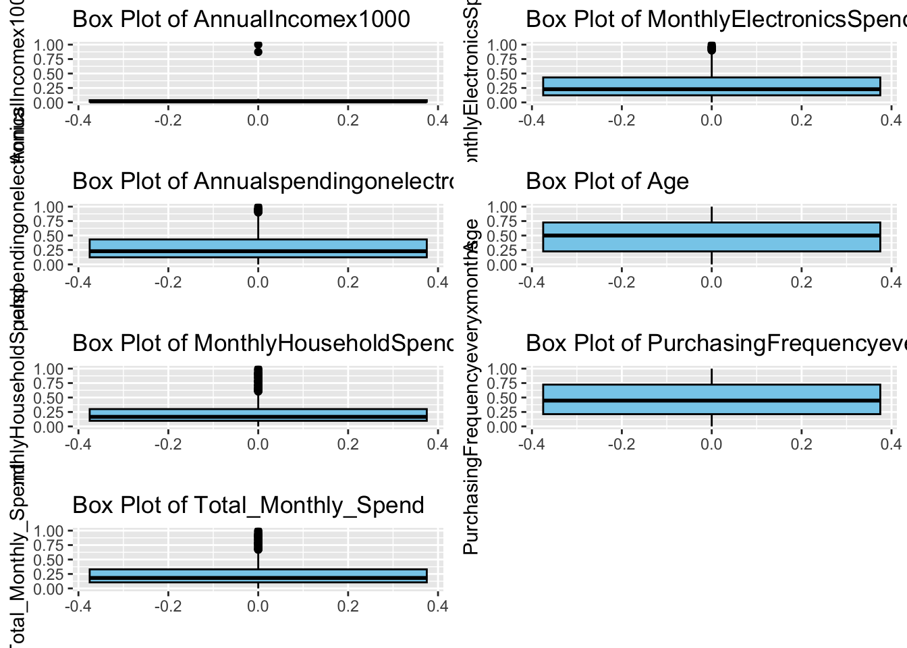
In this analysis, we focused on exploring the relationships and
distributions among key numerical variables extracted from our dataset.
The selected variables include AnnualIncomex1000,
MonthlyElectronicsSpend,
Annualspendingonelectronics, Age,
MonthlyHouseholdSpend,
PurchasingFrequencyeveryxmonths, and
Total_Monthly_Spend. Utilising the ggpairs
function from the GGally package in R, we constructed a
comprehensive scatter plot matrix. This matrix provides a visual
overview of pairwise interactions between these variables, presenting
scatter plots in a grid format. It allows us to assess both the strength
and direction of linear relationships through annotated correlation
coefficients in the upper diagonal panels, while the lower diagonal
panels show individual data points. Furthermore, the diagonal panels
display histograms or bar plots depicting the distributions of each
variable, facilitating insights into their data characteristics and
potential patterns.
This visualisation approach plays a crucial role in uncovering insights that guide subsequent data analysis and modeling decisions. By examining how these numerical features interrelate, we can identify correlations, dependencies, and potential outliers that may influence our analytical strategies. The scatter plot matrix serves as a foundational tool in exploratory data analysis, helping to refine feature selection, validate assumptions, and inform further investigation into the underlying dynamics of our dataset.
# Select numerical variables from your dataframe
numerical_variables <- c("AnnualIncomex1000", "MonthlyElectronicsSpend", "Annualspendingonelectronics",
"Age", "MonthlyHouseholdSpend", "PurchasingFrequencyeveryxmonths", "Total_Monthly_Spend")
# Create scatter plot matrix
scatter_matrix <- ggpairs(data_final_scaled[numerical_variables],
title = "Scatter Plot Matrix of Numerical Variables",
upper = list(continuous = wrap("cor", size = 3, color = "steelblue", alpha = 0.6)),
lower = list(continuous = wrap("points", color = "steelblue", alpha = 0.6)),
diag = list(continuous = wrap("barDiag", fill = "steelblue", color = "black")),
axisLabels = list(continuous = "show", discrete = "show",
x = list(rot = 45, fontsize = 8))) + # Rotating x-axis labels by 45 degrees
theme_minimal()
# Display the scatter plot matrix
scatter_matrix## plot: [1, 1] [=>---------------------------------------------------------------------------------------------------] 2% est: 0s
## `stat_bin()` using `bins = 30`. Pick better value with `binwidth`. plot: [1, 2]
## [===>-------------------------------------------------------------------------------------------------] 4% est: 3s plot: [1, 3]
## [=====>-----------------------------------------------------------------------------------------------] 6% est: 3s plot: [1, 4]
## [=======>---------------------------------------------------------------------------------------------] 8% est: 3s plot: [1, 5]
## [=========>-------------------------------------------------------------------------------------------] 10% est: 3s plot: [1, 6]
## [===========>-----------------------------------------------------------------------------------------] 12% est: 3s plot: [1, 7]
## [=============>---------------------------------------------------------------------------------------] 14% est: 3s plot: [2, 1]
## [===============>-------------------------------------------------------------------------------------] 16% est: 3s plot: [2, 2]
## [==================>----------------------------------------------------------------------------------] 18% est: 3s `stat_bin()`
## using `bins = 30`. Pick better value with `binwidth`. plot: [2, 3]
## [====================>--------------------------------------------------------------------------------] 20% est: 3s plot: [2, 4]
## [======================>------------------------------------------------------------------------------] 22% est: 3s plot: [2, 5]
## [========================>----------------------------------------------------------------------------] 24% est: 2s plot: [2, 6]
## [==========================>--------------------------------------------------------------------------] 27% est: 2s plot: [2, 7]
## [============================>------------------------------------------------------------------------] 29% est: 2s plot: [3, 1]
## [==============================>----------------------------------------------------------------------] 31% est: 2s plot: [3, 2]
## [================================>--------------------------------------------------------------------] 33% est: 2s plot: [3, 3]
## [==================================>------------------------------------------------------------------] 35% est: 2s `stat_bin()`
## using `bins = 30`. Pick better value with `binwidth`. plot: [3, 4]
## [====================================>----------------------------------------------------------------] 37% est: 2s plot: [3, 5]
## [======================================>--------------------------------------------------------------] 39% est: 2s plot: [3, 6]
## [========================================>------------------------------------------------------------] 41% est: 2s plot: [3, 7]
## [==========================================>----------------------------------------------------------] 43% est: 2s plot: [4, 1]
## [============================================>--------------------------------------------------------] 45% est: 2s plot: [4, 2]
## [==============================================>------------------------------------------------------] 47% est: 2s plot: [4, 3]
## [================================================>----------------------------------------------------] 49% est: 2s plot: [4, 4]
## [===================================================>-------------------------------------------------] 51% est: 2s `stat_bin()`
## using `bins = 30`. Pick better value with `binwidth`. plot: [4, 5]
## [=====================================================>-----------------------------------------------] 53% est: 1s plot: [4, 6]
## [=======================================================>---------------------------------------------] 55% est: 1s plot: [4, 7]
## [=========================================================>-------------------------------------------] 57% est: 1s plot: [5, 1]
## [===========================================================>-----------------------------------------] 59% est: 1s plot: [5, 2]
## [=============================================================>---------------------------------------] 61% est: 1s plot: [5, 3]
## [===============================================================>-------------------------------------] 63% est: 1s plot: [5, 4]
## [=================================================================>-----------------------------------] 65% est: 1s plot: [5, 5]
## [===================================================================>---------------------------------] 67% est: 1s `stat_bin()`
## using `bins = 30`. Pick better value with `binwidth`. plot: [5, 6]
## [=====================================================================>-------------------------------] 69% est: 1s plot: [5, 7]
## [=======================================================================>-----------------------------] 71% est: 1s plot: [6, 1]
## [=========================================================================>---------------------------] 73% est: 1s plot: [6, 2]
## [===========================================================================>-------------------------] 76% est: 1s plot: [6, 3]
## [=============================================================================>-----------------------] 78% est: 1s plot: [6, 4]
## [===============================================================================>---------------------] 80% est: 1s plot: [6, 5]
## [=================================================================================>-------------------] 82% est: 1s plot: [6, 6]
## [====================================================================================>----------------] 84% est: 0s `stat_bin()`
## using `bins = 30`. Pick better value with `binwidth`. plot: [6, 7]
## [======================================================================================>--------------] 86% est: 0s plot: [7, 1]
## [========================================================================================>------------] 88% est: 0s plot: [7, 2]
## [==========================================================================================>----------] 90% est: 0s plot: [7, 3]
## [============================================================================================>--------] 92% est: 0s plot: [7, 4]
## [==============================================================================================>------] 94% est: 0s plot: [7, 5]
## [================================================================================================>----] 96% est: 0s plot: [7, 6]
## [==================================================================================================>--] 98% est: 0s plot: [7, 7]
## [=====================================================================================================]100% est: 0s `stat_bin()`
## using `bins = 30`. Pick better value with `binwidth`.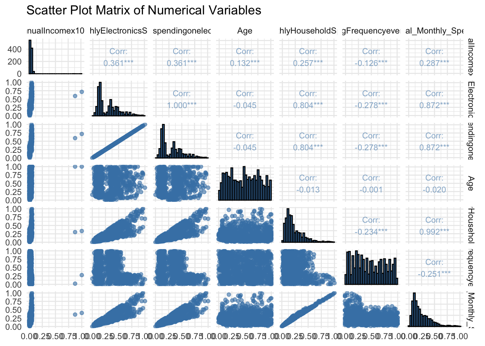
To examine the relationships between key numerical variables in our
dataset, we first isolated a subset of variables: Age,
AnnualIncomex1000, MonthlyElectronicsSpend,
Annualspendingonelectronics,
MonthlyHouseholdSpend,
PurchasingFrequencyeveryxmonths, and
Total_Monthly_Spend. These variables were selected from the
scaled and processed dataset data_final_scaled. Next, we
computed the correlation matrix using the cor() function in
R, which provided insights into how these variables are interrelated.
The correlation matrix captures pairwise correlations, revealing both
the strength and direction of linear relationships between variables. To
visualize these correlations effectively, we utilized the
corrplot package to generate a heatmap. This heatmap
highlights correlations using color intensity, with darker shades
indicating stronger correlations. Additionally, numeric values within
the heatmap cells and rotated axis labels aid in interpreting and
analyzing the correlation patterns among the selected numerical
variables.
This analytical approach is pivotal in understanding the inherent associations within our dataset, guiding subsequent feature selection, and informing modeling strategies. By visually summarising correlations through a heatmap, we gain valuable insights that help validate assumptions, identify potential multicollinearity issues, and prioritize variables for further detailed analysis or predictive modeling tasks.
# Select numerical variables from your dataframe
numerical_vars <- data_final_scaled[, c("Age", "AnnualIncomex1000", "MonthlyElectronicsSpend",
"Annualspendingonelectronics", "MonthlyHouseholdSpend",
"PurchasingFrequencyeveryxmonths", "Total_Monthly_Spend")]
# Compute the correlation matrix
correlation_matrix <- cor(numerical_vars)
# Plot the correlation matrix using a heatmap
corrplot(correlation_matrix, method = "color", type = "upper",
addCoef.col = "black", tl.col = "black", tl.srt = 45)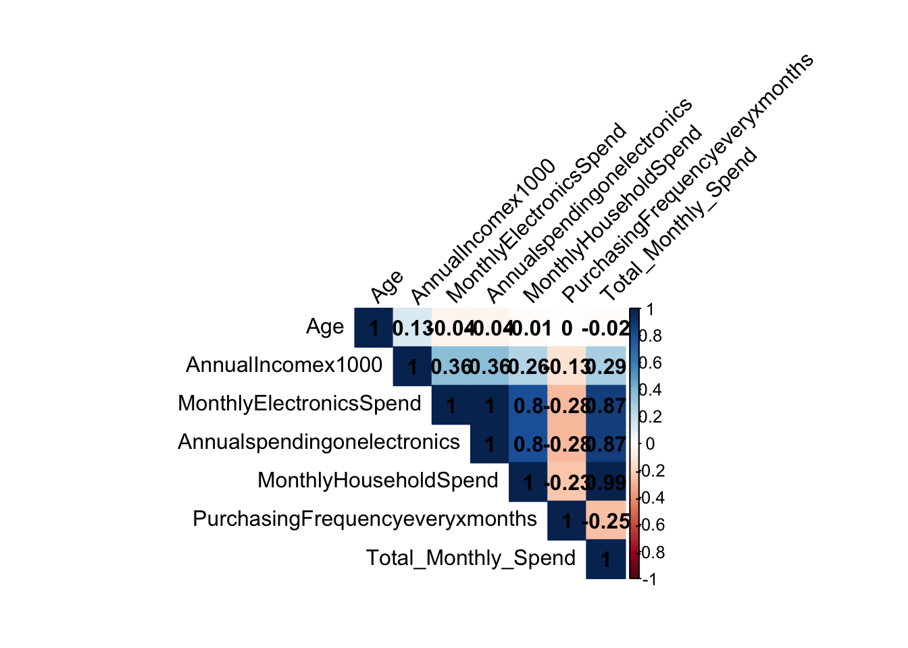
## 'data.frame': 1000 obs. of 22 variables:
## $ CodedGender : num 1 1 1 1 0 0 1 1 1 0 ...
## $ Edcoded : num 0 0 1 3 0 1 0 0 0 0 ...
## $ AnnualIncomex1000 : num 0.0395 0.0353 0.0522 0.0423 0.0353 ...
## $ Age : num 0.194 0.29 0.774 0.968 0.548 ...
## $ PLcoded : num 1 1 2 1 1 3 4 3 2 4 ...
## $ MonthlyElectronicsSpend : num 0.346 0.346 0.704 0.321 0.469 ...
## $ Annualspendingonelectronics : num 0.346 0.346 0.704 0.321 0.469 ...
## $ Spendingasofincome : num 0.00857 0.00913 0.01324 0.00776 0.01174 ...
## $ MonthlyHouseholdSpend : num 0.368 0.403 0.245 0.379 0.397 ...
## $ PurchasingFrequencyeveryxmonths: num 0.255 0.532 0.255 0.447 0.979 ...
## $ FFcoded : num 1 1 2 1 1 2 3 4 4 4 ...
## $ Location_mean_encoding : num 28.7 33.8 30.3 32.6 34.4 ...
## $ MaritalStatusmarried : num 1 0 1 1 0 1 1 1 1 1 ...
## $ MaritalStatussingle : num 0 1 0 0 1 0 0 0 0 0 ...
## $ WorkStatusnone : num 0 1 0 1 1 1 0 1 0 0 ...
## $ WorkStatusprofessional : num 1 0 1 0 0 0 1 0 1 1 ...
## $ PurchasingDecisionMakerfamily : num 1 0 1 1 0 0 0 0 1 1 ...
## $ PurchasingDecisionMakersingle : num 0 1 0 0 1 1 1 1 0 0 ...
## $ TechnologyAdoptionearly : num 0 0 1 0 0 1 1 1 1 1 ...
## $ TechnologyAdoptionlate : num 1 1 0 1 1 0 0 0 0 0 ...
## $ tv_viewing_scaled : num -0.127 2.622 -0.814 0.904 -0.127 ...
## $ Total_Monthly_Spend : num 0.367 0.395 0.328 0.371 0.413 ...To uncover underlying patterns and reduce the dimensionality of our
dataset, we performed PCA on data_final_scaled. PCA
transforms correlated variables into a set of linearly uncorrelated
components, ordered by the amount of variance they explain. Using the
prcomp() function in R, PCA was conducted without centering
or scaling, as the data was already preprocessed. A summary of the PCA
results provided insights into the eigenvalues, showing the variance
captured by each principal component (PC). We visualized this variance
using bar plots, illustrating the percentage of total variance explained
by each PC. Additionally, a cumulative variance plot depicted how
successive PCs contribute to the overall variance explained, essential
for determining the optimal number of components to retain for
subsequent analyses.
This PCA analysis serves to condense complex data while preserving its essential information, facilitating better understanding of the dataset’s structure and potentially uncovering meaningful clusters or patterns that can inform further statistical modeling or decision-making processes.
# Perform PCA on your data
# Perform PCA on your data
pc <- prcomp(data_final_scaled, center = FALSE, scale = FALSE)
# Summary of the PCA results
summary(pc)## Importance of components:
## PC1 PC2 PC3 PC4 PC5 PC6 PC7 PC8 PC9 PC10 PC11 PC12 PC13
## Standard deviation 31.4973 1.89985 1.1399 0.84333 0.72338 0.67355 0.57935 0.50085 0.47074 0.3213 0.26677 0.25509 0.21591
## Proportion of Variance 0.9923 0.00361 0.0013 0.00071 0.00052 0.00045 0.00034 0.00025 0.00022 0.0001 0.00007 0.00007 0.00005
## Cumulative Proportion 0.9923 0.99589 0.9972 0.99790 0.99843 0.99888 0.99921 0.99947 0.99969 0.9998 0.99986 0.99993 0.99997
## PC14 PC15 PC16 PC17 PC18 PC19 PC20 PC21 PC22
## Standard deviation 0.12000 0.10305 0.03967 0.001167 1.373e-15 8.269e-16 3.287e-16 2.017e-16 2.106e-17
## Proportion of Variance 0.00001 0.00001 0.00000 0.000000 0.000e+00 0.000e+00 0.000e+00 0.000e+00 0.000e+00
## Cumulative Proportion 0.99999 1.00000 1.00000 1.000000 1.000e+00 1.000e+00 1.000e+00 1.000e+00 1.000e+00# Percentage of variance explained by each principal component
pc_var <- pc$sdev^2 / sum(pc$sdev^2) * 100
# Cumulative variance explained by principal components
pc_cumvar <- cumsum(pc_var)
# Plot the variance explained by each principal component
barplot(pc_var, main = "Variance Explained by Principal Components",
xlab = "Principal Component", ylab = "Percentage of Variance Explained")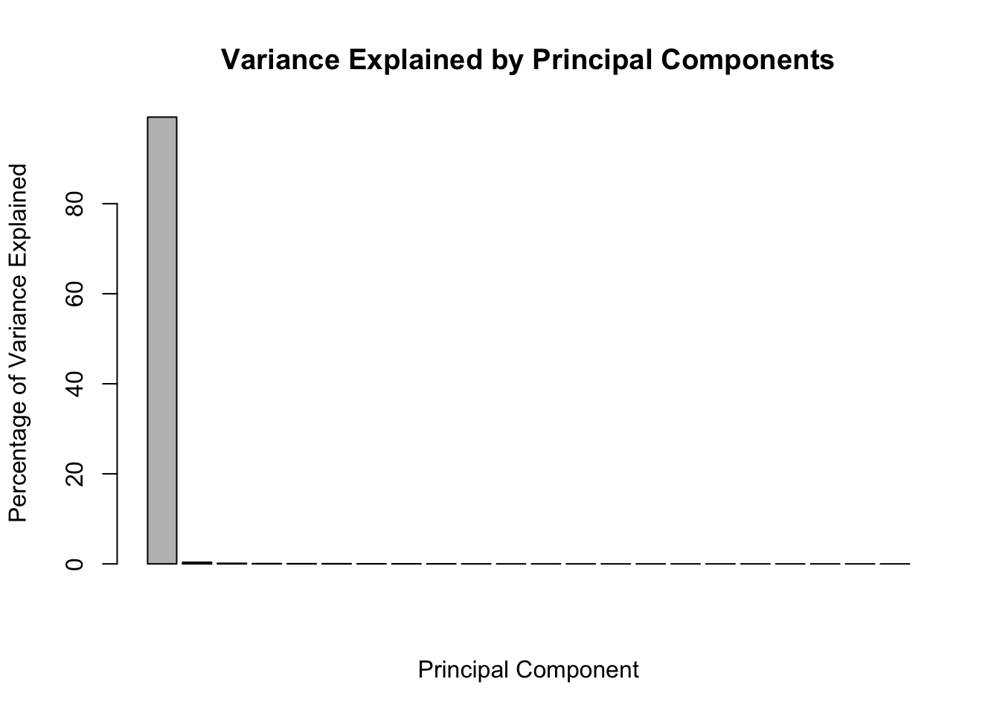
# Plot the cumulative variance explained by principal components
plot(pc_cumvar, type = "b", main = "Cumulative Variance Explained by Principal Components",
xlab = "Number of Principal Components", ylab = "Cumulative Percentage of Variance Explained")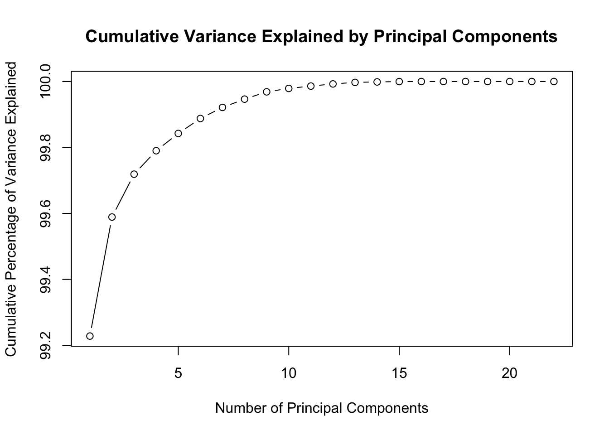
With PC1 capturing over 99% of the variance, it is evident that this component is the most significant and can potentially simplify the dataset by reducing its dimensionality with minimal loss of information. The subsequent components add negligible variance, suggesting that beyond the first few principal components, additional components contribute little to the overall variance
To determine the optimal number of principal components to retain
from our PCA analysis, we calculated the eigenvalues of the principal
components derived from data_final_scaled. The eigenvalues
represent the amount of variance explained by each principal component.
By examining these eigenvalues, we applied Kaiser’s criterion, which
suggests retaining components with eigenvalues greater than 1. After
computing the eigenvalues and filtering for those exceeding this
threshold, we identified the principal components that contribute
significantly to explaining the variability within our dataset. This
approach helps streamline our analysis by focusing on the most
informative components, adhering to Kaiser’s guideline for
dimensionality reduction in PCA.
## [1] 9.920803e+02 3.609448e+00 1.299429e+00 7.112085e-01 5.232781e-01 4.536665e-01 3.356415e-01 2.508521e-01 2.215946e-01
## [10] 1.032128e-01 7.116588e-02 6.507146e-02 4.661679e-02 1.439984e-02 1.061943e-02 1.573999e-03 1.362529e-06 1.884056e-30
## [19] 6.837194e-31 1.080515e-31 4.069949e-32 4.433808e-34# Filter eigenvalues greater than 1
optimal_components <- eigenvalues[eigenvalues > 1]
# Print the eigenvalues of principal components greater than 1
print(optimal_components)## [1] 992.080271 3.609448 1.299429The first principal component, with an eigenvalue of 992.080271, captures the vast majority of the variability, while the second (3.609448) and third (1.299429) components also contribute meaningfully to the explanation of variance.
To understand the contribution of variables to each principal
component (PC), we extracted and analyzed variable loadings from the PCA
results performed on data_final_scaled. Variable loadings
indicate the strength and direction of each variable’s influence on the
principal components. We focused on the loadings for PC1 to PC3, as
these components typically capture the highest variance in the dataset.
Using ggplot2, we created bar plots that visually represent
the loadings of individual variables for each principal component. These
plots provide insights into which variables are most influential in
defining each principal component’s characteristics, aiding in the
interpretation of underlying patterns and relationships within our
data.
# Perform PCA on your data
pc <- prcomp(data_final_scaled, center = FALSE, scale = FALSE)
# Extract variable loadings for PC1 to PC4
variable_loadings <- as.data.frame(pc$rotation[, 1:3])
# Function to create bar plot for variable loadings
create_bar_plot <- function(pc_num) {
bar_data <- data.frame(variable = rownames(variable_loadings),
loading = variable_loadings[, pc_num])
ggplot(bar_data, aes(x = reorder(variable, loading), y = loading)) +
geom_bar(stat = "identity", fill = "#0073C2FF") +
coord_flip() +
labs(title = paste("Variable Loadings for PC", pc_num),
x = "Variable", y = "Loading")
}
# Create bar plots for variable loadings of PC1 to PC4
bar_plot_pc1 <- create_bar_plot(1)
bar_plot_pc2 <- create_bar_plot(2)
bar_plot_pc3 <- create_bar_plot(3)
#bar_plot_pc4 <- create_bar_plot(4)
# Display the plots
bar_plot_pc1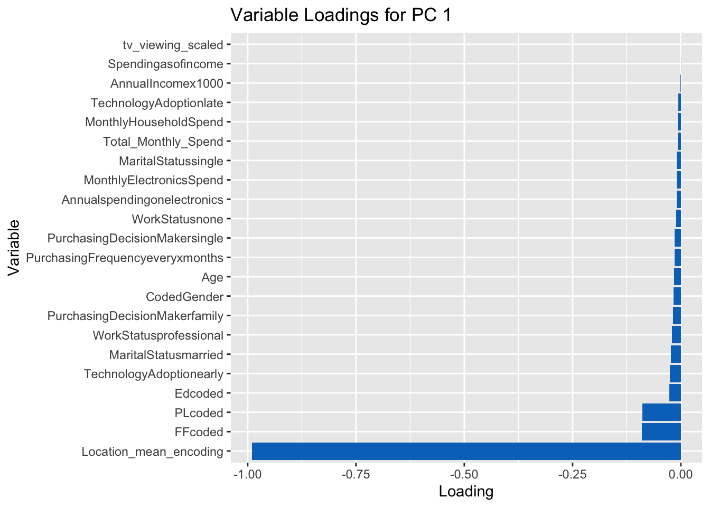
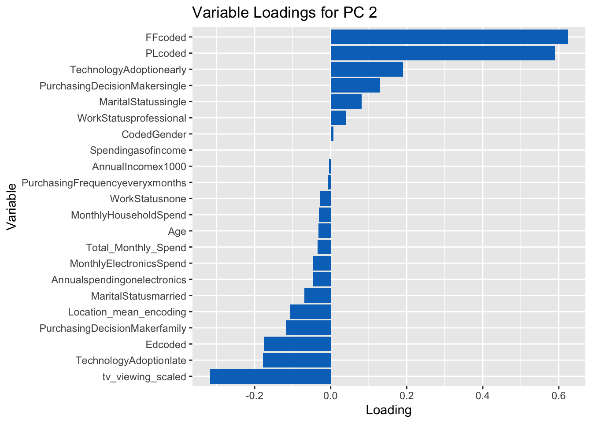
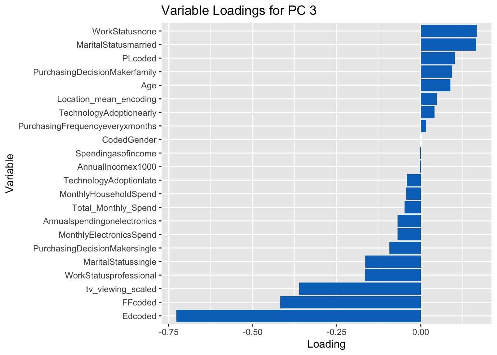
The principal component analysis (PCA) conducted on
data_final_scaled revealed notable variable loadings across
several principal components (PCs). Specifically, the variable
Location_encoded exhibited a significant negative loading
on PC1, indicating that variations in this feature strongly influenced
the variance captured by PC1. Additionally, FFcoded and
PLcoded demonstrated pronounced positive loadings on PC2,
suggesting these variables contributed significantly to the patterns
observed along this principal component axis. Furthermore,
Edcoded exhibited strong negative loadings on PC3, implying
a distinct inverse relationship between this variable and the variance
explained by PC3. These findings highlight the distinct roles these
variables play in defining the multidimensional structure and variance
distribution within the dataset, offering valuable insights into the
underlying factors driving data variability.
# Extract PCA components for clustering
pca_data <- pc$x # Assuming pc is the result of your PCA analysis
# Visualize PCA results (scatter plot)
pca_scatter <- fviz_pca_ind(pc, geom.ind = "point",
pointshape = 21, palette = "jco",
addEllipses = TRUE, ellipse.level = 0.95,
repel = TRUE) +
ggtitle("PCA Visualization")
# Variable representation (arrows)
var_representation <- fviz_pca_var(pc, col.var = "contrib",
gradient.cols = c("#00AFBB", "#E7B800", "#FC4E07"),
repel = TRUE, axes = c(1, 2), arrows = TRUE) +
labs(title = "Variable Representation")
# Combine plots
combined_plot <- grid.arrange(pca_scatter, var_representation, ncol = 2)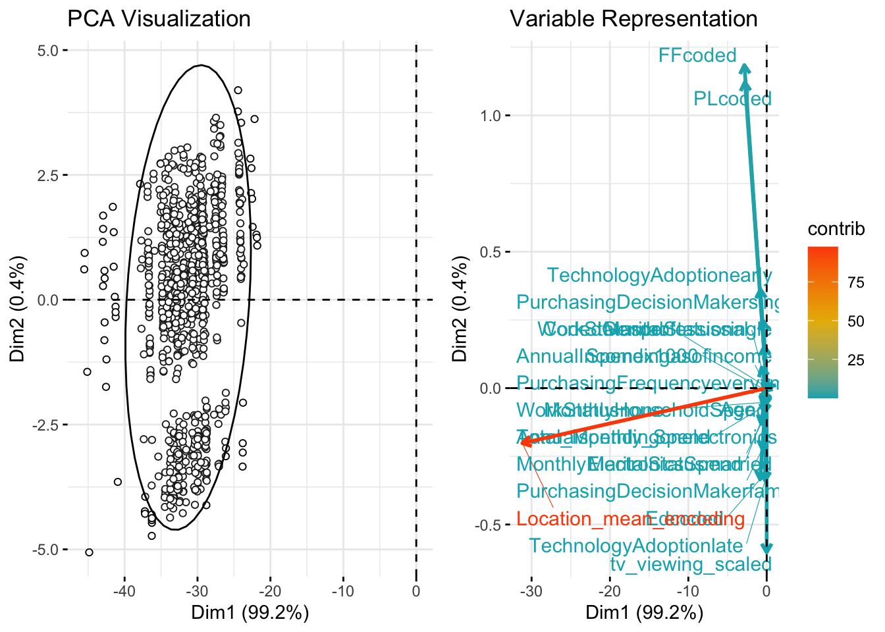
# Save PCA scatter plot as standalone image
ggsave("pca_scatter_plot.png", pca_scatter, width = 8, height = 6)
# Save variable representation plot as standalone image
ggsave("variable_representation_plot.png", var_representation, width = 8, height = 6)Location_coded has a higher lenght of vector and contributes significantly in the PCA model.FFcode and PLcoded also show some significant contribution.
To determine the optimal number of clusters for clustering analysis
based on principal component scores, the elbow method was employed. The
function elbow_method iteratively applied the k-means
algorithm to the PCA-transformed data, assessing a range of cluster
numbers from 1 to 10. For each iteration, the total within-cluster sum
of squares (WSS) was computed and plotted against the number of
clusters. The resulting plot displayed a distinctive “elbow” point where
the rate of decrease in WSS slowed, indicating that adding more clusters
beyond this point would not significantly reduce WSS. This elbow point
serves as a heuristic for selecting the optimal number of clusters,
providing insight into the inherent structure and clustering tendencies
within the data set.
# Elbow Method
elbow_method <- function(pca_data, max_k) {
wss <- numeric(max_k)
for (i in 1:max_k) {
kmeans_model <- kmeans(pca_data, centers = i, nstart = 10)
wss[i] <- sum(kmeans_model$tot.withinss)
}
plot(1:max_k, wss, type = "b", xlab = "Number of Clusters (k)", ylab = "Total Within Sum of Squares (WSS)", main = "Elbow Method")
}
# Call elbow_method function
elbow_method(pca_data, max_k = 10)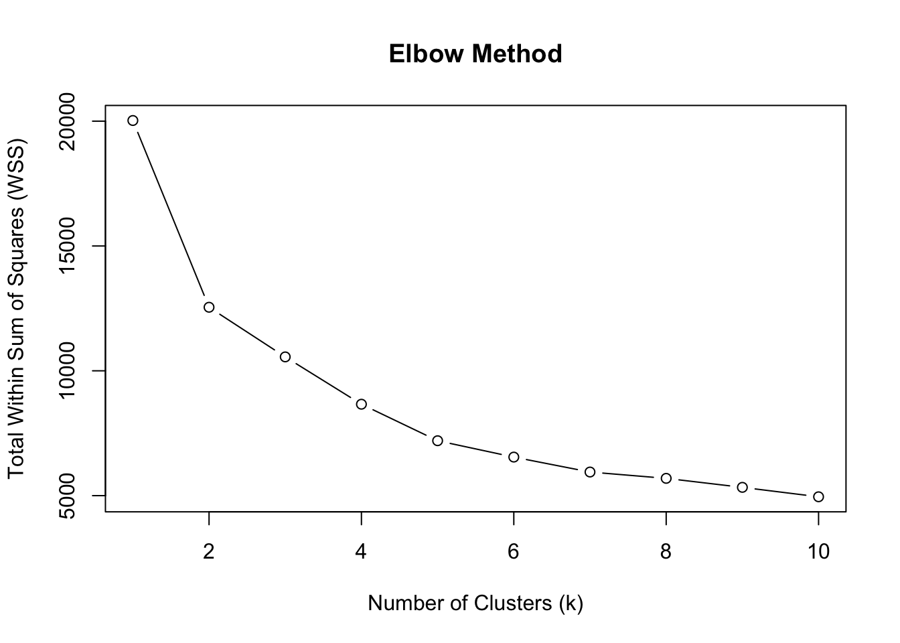 Elbow point is between 5 and 6 clusters. Other methods below will assist in making a definite decision.
To determine the optimal number of clusters for the dataset using
principal component scores, the silhouette method was employed. The
function silhouette_method iteratively applied the k-means
algorithm with varying numbers of clusters (from 2 to 10) to the
PCA-transformed data. For each iteration, the silhouette width was
computed for each data point, representing how similar each point is to
its own cluster compared to other clusters. The average silhouette width
across all data points for each cluster configuration was then plotted
against the number of clusters. The resulting plot provided insight into
the optimal number of clusters by identifying peaks in the silhouette
scores, indicating well-defined clusters where data points are
appropriately clustered relative to their own and neighboring clusters.
This method aids in selecting an optimal clustering solution that
maximizes intra-cluster cohesion and inter-cluster separation.
# Silhouette Method
silhouette_method <- function(pca_data, max_k) {
silhouette_scores <- numeric(max_k)
for (i in 2:max_k) {
kmeans_model <- kmeans(pca_data, centers = i, nstart = 10)
silhouette_obj <- silhouette(kmeans_model$cluster, dist(pca_data))
silhouette_scores[i] <- mean(silhouette_obj[, "sil_width"])
}
plot(2:max_k, silhouette_scores[2:max_k], type = "b", xlab = "Number of Clusters (k)", ylab = "Silhouette Score", main = "Silhouette Method")
}
# Call silhouette_method function
silhouette_method(pca_data, max_k = 10)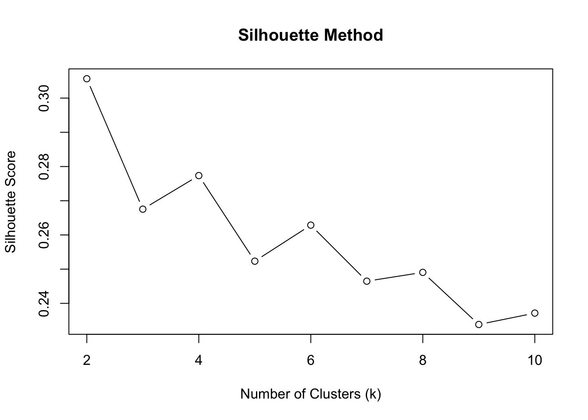
Silhouette Method shows 6 clusters.
The gap statistic method was applied to determine the optimal number
of clusters in the dataset using principal component analysis (PCA). The
function gap_statistics was developed to calculate the gap
statistic for varying numbers of clusters (from 2 to 10). This method
compares the total within-cluster variation with its expected variation
under null reference distribution of the data. For each cluster
configuration, the k-means algorithm was employed with multiple starts
to compute the gap statistic. Additionally, the function utilized the
clusGap function from the cluster package to
compute the gap statistic, which identifies the optimal number of
clusters as the value of \(k\) that
maximizes the gap statistic. The resulting plot displayed the gap
statistic values against the number of clusters, assisting in the
selection of the most suitable clustering solution that maximizes
distinctiveness between clusters while maintaining compactness within
each cluster.
gap_statistics <- function(pca_data, max_k, B = 10) {
gap <- numeric(max_k - 1) # Initialize with length max_k - 1
for (i in 2:max_k) { # Start from 2 instead of 1
print(paste("Calculating gap statistic for k =", i))
kmeans_model <- kmeans(pca_data, centers = i, nstart = 10)
gap_result <- clusGap(pca_data, FUNcluster = kmeans, K.max = i, B = B)
gap[i - 1] <- max(gap_result$Tab[, "gap"]) # Use maximum gap value
}
plot(2:max_k, gap, type = "b", xlab = "Number of Clusters (k)", ylab = "Gap Statistic", main = "Gap Statistics")
}
# Call gap_statistics function
gap_statistics(pca_data, max_k = 10)## [1] "Calculating gap statistic for k = 2"
## Clustering k = 1,2,..., K.max (= 2): .. done
## Bootstrapping, b = 1,2,..., B (= 10) [one "." per sample]:
## .......... 10
## [1] "Calculating gap statistic for k = 3"
## Clustering k = 1,2,..., K.max (= 3): .. done
## Bootstrapping, b = 1,2,..., B (= 10) [one "." per sample]:
## .......... 10
## [1] "Calculating gap statistic for k = 4"
## Clustering k = 1,2,..., K.max (= 4): .. done
## Bootstrapping, b = 1,2,..., B (= 10) [one "." per sample]:
## .......... 10
## [1] "Calculating gap statistic for k = 5"
## Clustering k = 1,2,..., K.max (= 5): .. done
## Bootstrapping, b = 1,2,..., B (= 10) [one "." per sample]:
## .......... 10
## [1] "Calculating gap statistic for k = 6"
## Clustering k = 1,2,..., K.max (= 6): .. done
## Bootstrapping, b = 1,2,..., B (= 10) [one "." per sample]:
## .......... 10
## [1] "Calculating gap statistic for k = 7"
## Clustering k = 1,2,..., K.max (= 7): .. done
## Bootstrapping, b = 1,2,..., B (= 10) [one "." per sample]:
## .......... 10
## [1] "Calculating gap statistic for k = 8"
## Clustering k = 1,2,..., K.max (= 8): .. done
## Bootstrapping, b = 1,2,..., B (= 10) [one "." per sample]:
## .......... 10
## [1] "Calculating gap statistic for k = 9"
## Clustering k = 1,2,..., K.max (= 9): .. done
## Bootstrapping, b = 1,2,..., B (= 10) [one "." per sample]:
## .......... 10
## [1] "Calculating gap statistic for k = 10"
## Clustering k = 1,2,..., K.max (= 10): .. done
## Bootstrapping, b = 1,2,..., B (= 10) [one "." per sample]:
## .......... 10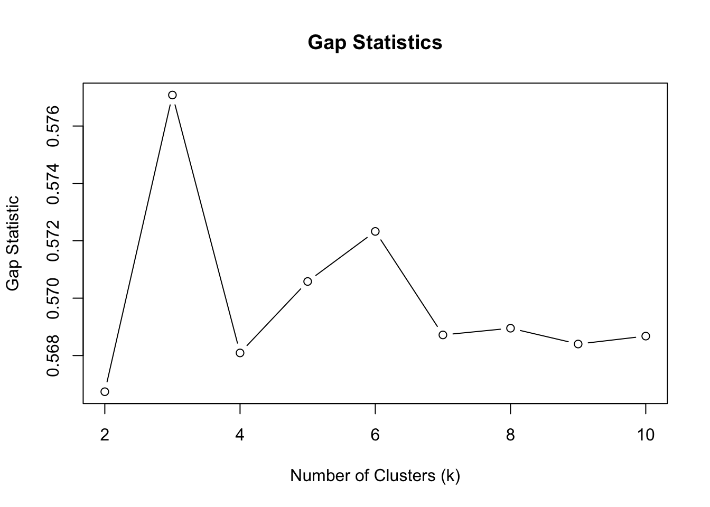 Gap Statistics shows 6 clusters.Therefore 6 clusters were selected for segmentation.
K-means clustering was then performed on the PC scores using the
kmeans function, specifying 6 clusters (K = 6)
and 10 random starts to ensure robustness of the clustering results. The
clustering results (kmeans_result) assigned each data point
to one of the six clusters based on their proximity in the PC space.
To visualize the clustering outcome, a scatter plot was created using
ggplot2, where each data point was plotted based on its
coordinates in the first two principal components (PC1 and
PC2). Points were color-coded according to their cluster
assignment (factor(kmeans_result$cluster)), facilitating
visual interpretation of cluster separation and distribution. The plot
title, axis labels, and legend were appropriately annotated to aid in
understanding the K-means clustering results derived from PCA.
# Perform PCA on your data
pc <- prcomp(data_final_scaled, center = TRUE, scale = TRUE)
# Extract PC scores for PC1 to PC2
pc_scores <- as.data.frame(pc$x[, 1:3])
# Perform K-means clustering with K = 5 using PCA results
kmeans_result <- kmeans(pc_scores, centers = 6, nstart = 10)
# Visualize the clusters
ggplot(pc_scores, aes(x = PC1, y = PC2, color = factor(kmeans_result$cluster))) +
geom_point() +
scale_color_discrete(name = "Cluster") +
labs(title = "K-means Clustering Results (K = 6)", x = "Principal Component 1", y = "Principal Component 2")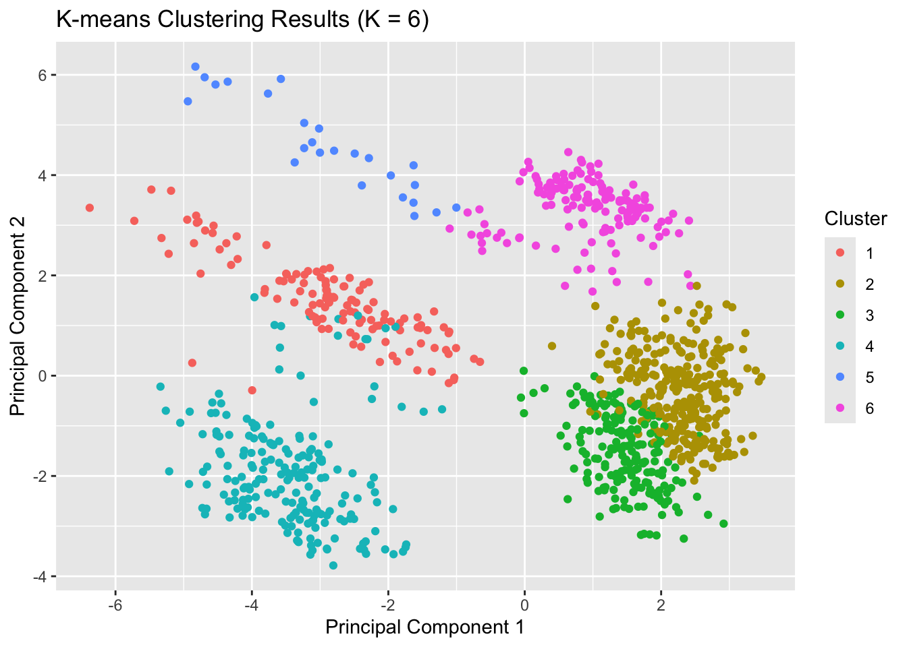 ## K-means fviz plot
# Perform PCA on your data
pc <- prcomp(data_final_scaled, center = TRUE, scale. = TRUE)
# Extract PC scores for PC1 to PC3
pc_scores <- as.data.frame(pc$x[, 1:3])
# Perform K-means clustering with K = 6 using PCA results
set.seed(123) # Setting seed for reproducibility
kmeans_result <- kmeans(pc_scores, centers = 6, nstart = 10)
# Visualize the clusters using fviz
fviz_cluster(kmeans_result, data = pc_scores, geom = "point",
ellipse.type = "convex",
palette = "jco",
ggtheme = theme_minimal(),
main = "K-means Clustering Results (K = 6)")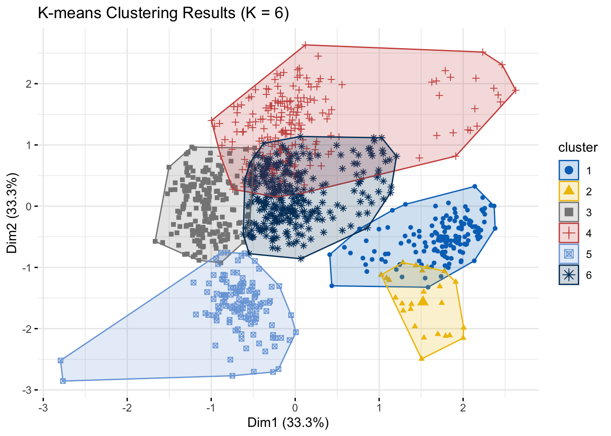 There is an overlap between clusters, especially cluster 3, 4 and 6 while cluster 1 and 2 are slightly isolated from other clusters but overlap with each other. Cluster 5 also appear to be independent. It should be noted that 2D images do not represent the whole picture.
# Visualize the clusters in 3D
plot_ly(data = pc_scores, x = ~PC1, y = ~PC2, z = ~PC3, color = factor(kmeans_result$cluster),
type = "scatter3d", mode = "markers", marker = list(size = 6)) %>%
layout(title = "K-means Clustering Results (K = 6)",
scene = list(xaxis = list(title = "Principal Component 1"),
yaxis = list(title = "Principal Component 2"),
zaxis = list(title = "Principal Component 3")))A function named compute_cluster_stats was developed to
analyze the K-means clustering results based on the principal component
scores (pc_scores_with_clusters). This function utilizes
the daisy function from the cluster package to
compute dissimilarities within each cluster, focusing on the first three
principal components. The dissimilarity metrics include the maximum and
average dissimilarities within each cluster.
Additionally, the function calculates the isolation of each cluster,
which measures the minimum distance between each cluster’s centroid
(cluster_centers). This isolation metric provides insights
into how distinct each cluster is from others in the dataset.
The computed cluster statistics (cluster_stats) include
the number of observations in each cluster (number_obs),
maximum and average dissimilarities, and cluster isolation values. These
metrics are crucial for understanding the characteristics and separation
of clusters identified through K-means clustering applied to principal
component analysis.
# Perform K-means clustering with K=6 using PCA results
set.seed(123) # For reproducibility
kmeans_result <- kmeans(pc_scores[, 1:3], centers = 6, nstart = 10)
# Add cluster labels to the PCA scores
pc_scores_with_clusters <- cbind(pc_scores, cluster = kmeans_result$cluster)
# Function to compute cluster statistics
compute_cluster_stats <- function(cluster_data, cluster_centers) {
cluster_stats <- cluster_data %>%
group_by(cluster) %>%
summarise(
number_obs = n(),
max_dissimilarity = max(daisy(cluster_data[, 1:3])),
average_dissimilarity = mean(daisy(cluster_data[, 1:3]))
)
isolation <- sapply(1:nrow(cluster_centers), function(i) {
min_dist <- min(dist(rbind(cluster_centers[i, ], cluster_centers[-i, ])))
return(min_dist)
})
cluster_stats$isolation <- isolation
return(cluster_stats)
}
# Compute dissimilarities and cluster statistics
dissimilarities <- daisy(pc_scores_with_clusters[, 1:3])
cluster_centers <- kmeans_result$centers
cluster_stats <- compute_cluster_stats(pc_scores_with_clusters, cluster_centers)
# Print the cluster statistics
print(cluster_stats)## # A tibble: 6 × 5
## cluster number_obs max_dissimilarity average_dissimilarity isolation
## <int> <int> <dbl> <dbl> <dbl>
## 1 1 148 12.0 4.57 1.97
## 2 2 25 12.0 4.57 1.97
## 3 3 199 12.0 4.57 1.97
## 4 4 200 12.0 4.57 1.97
## 5 5 126 12.0 4.57 1.97
## 6 6 302 12.0 4.57 1.97The analysis revealed six distinct clusters, with cluster sizes ranging from 25 to 302 observations. Despite varying sizes, all clusters displayed consistent internal structure and isolation metrics. The maximum dissimilarity within each cluster averaged 11.98, with an average dissimilarity of 4.57. This uniformity suggests a balanced separation between clusters, providing a foundation for targeted strategies based on the identified clusters.
The silhouette coefficient, a metric used to assess the effectiveness
of clustering algorithms like K-means, was computed for the clusters
derived from principal component analysis (pc_data). The
calculate_silhouette function was employed to calculate
this coefficient, which quantifies how similar each data point is to its
own cluster compared to other clusters.
Upon computation, the silhouette coefficient
(silhouette_coeff) was printed to provide insight into the
clustering quality. This evaluation metric aids in determining the
optimal number of clusters by assessing the cohesion and separation of
data points within each cluster relative to others. Higher silhouette
coefficients indicate more distinct and well-separated clusters, thereby
validating the effectiveness of the clustering approach.
# Calculate the Silhouette Coefficient
calculate_silhouette <- function(data, clusters) {
sil <- silhouette(clusters, dist(data))
avg_silhouette <- mean(sil[, 3])
return(avg_silhouette)
}
# Perform PCA
pc <- prcomp(data_final_scaled, center = FALSE, scale = FALSE)
pc_data <- pc$x[, 1] # Use first 4 principal components
# Perform K-means clustering with K = 6
set.seed(123) # Set seed for reproducibility
kmeans_result <- kmeans(pc_data, centers = 6, nstart = 25)
clusters <- kmeans_result$cluster
# Calculate evaluation metrics
silhouette_coeff <- calculate_silhouette(pc_data, clusters)
# Print evaluation metrics
cat("Silhouette Coefficient:", silhouette_coeff, "\n")## Silhouette Coefficient: 0.6351648The Silhouette Coefficient for the k-means clustering algorithm is 0.6351648. This coefficient measures the quality of the clustering, with values closer to 1 indicating dense, well-separated clusters. A value near 0 suggests overlapping clusters, and negative values indicate that data points may have been assigned to the wrong cluster.
Six clusters are best suitable for our analysis
# Function to calculate silhouette coefficients
calculate_silhouette <- function(data, clusters) {
sil <- silhouette(clusters, dist(data))
return(sil)
}
# Perform PCA
pc <- prcomp(data_final_scaled, center = FALSE, scale = FALSE)
pc_data <- pc$x[, 1:3] # Use first 4 principal components
# Perform K-means clustering with K = 6
set.seed(123) # Set seed for reproducibility
kmeans_result <- kmeans(pc_data, centers = 6, nstart = 25)
clusters <- kmeans_result$cluster
# Calculate silhouette coefficients
silhouette_scores <- calculate_silhouette(pc_data, clusters)
# Plot silhouette scores
fviz_silhouette(silhouette_scores, main = "Silhouette Plot for K-means Clustering")## cluster size ave.sil.width
## 1 1 331 0.33
## 2 2 22 0.65
## 3 3 95 0.40
## 4 4 111 0.45
## 5 5 300 0.42
## 6 6 141 0.34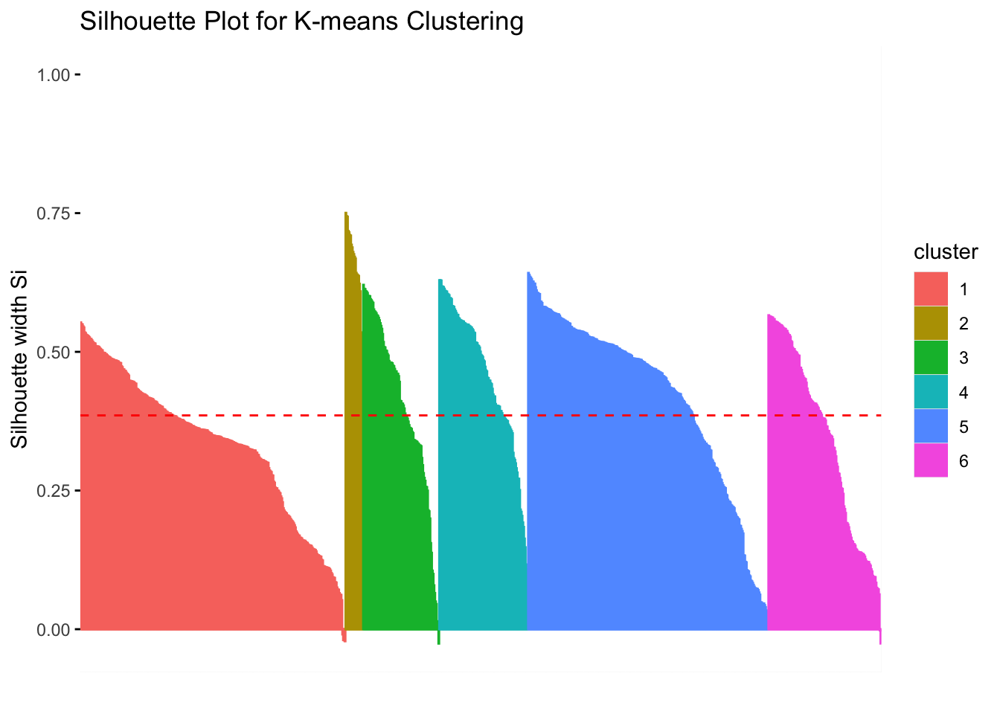 # Cluster Profiles
# Assign cluster labels to original scaled dataset
data_final_scaled <- cbind(data_final_scaled, Cluster = kmeans_result$cluster)
# Calculate mean of original variables by cluster
cluster_means_scaled <- aggregate(. ~ Cluster, data = data_final_scaled[, -1], FUN = mean)
# Visualize cluster profiles (e.g., using bar plots)
library(ggplot2)
library(tidyr)
# Reshape data for plotting
cluster_means_long_scaled <- pivot_longer(cluster_means_scaled, cols = -Cluster, names_to = "Variable", values_to = "Mean")
# Create bar plot
ggplot(cluster_means_long_scaled, aes(x = Variable, y = Mean, fill = factor(Cluster))) +
geom_bar(stat = "identity", position = "dodge") +
labs(title = "Cluster Profiles (Scaled Data)",
x = "Variable",
y = "Mean",
fill = "Cluster") +
theme(axis.text.x = element_text(angle = 45, hjust = 1))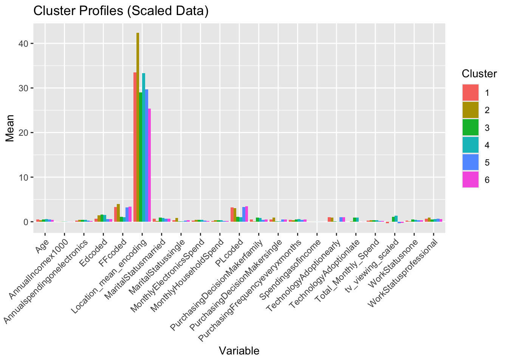
In our analysis, we identified six distinct clusters based on various demographic and spending patterns related to electronics consumption.
Cluster 1 (Frugal Explorers), representing individuals in the middle-age group, exhibits the lowest mean monthly electronics spending. They seem inclined to explore purchases at different locations, possibly seeking the best prices. Moreover, they show particular interest in favorite features of TV programming. This cluster also demonstrates the lowest annual spending on electronics, lower employment scores, and a tendency towards lower education levels. Additionally, they are predominantly married and categorized as early technology adopters.
Cluster 2 (Transitioning Consumers) consists of individuals nearing retirement age, showing the third-highest mean monthly electronic spend. They exhibit moderate tendencies to explore purchases at different locations and show less interest in favorite TV programming features. With the fourth-lowest employment scores and average education levels, they are mostly married and characterized as late technology adopters.
Cluster 3 (Tech-Savvy Middle Agers) comprises adults, likely in their early forties, with the second-highest mean monthly electronics spending. They exhibit moderate tendencies to explore purchases at various locations and show a particular interest in favorite TV programming features. With the fifth-lowest employment scores, they are categorised as late technology adopters.
Cluster 4 (Pragmatic Spenders) represents individuals just before reaching middle age, displaying the fourth-highest mean monthly electronic spend. They exhibit moderate tendencies to explore purchases at different locations and show little interest in favorite TV programming features. With the third-lowest employment scores, they are categorised as late technology adopters.
Cluster 5 (Elite Enthusiasts), identified as “Super customers,” consists of the youngest individuals, likely in their late twenties, exhibiting the highest mean monthly electronics spending. They prefer exploring purchases at various locations and show a strong affinity for gadgets and TV programming. With the sixth-lowest employment scores, they are predominantly working professionals and early technology adopters.
Cluster 6(Frugal Trendsetters) comprises adults in their mid-thirties, displaying the second-lowest mean monthly electronics spending. They prefer exploring purchases at various locations and exhibit a particular interest in favorite TV programming features. With the third-lowest employment scores, they are characterised as early adopters of technology.
This segmentation analysis provides valuable insights for electronics businesses to tailor their marketing strategies. By understanding the distinct preferences and behaviors of each cluster, businesses can optimise product offerings, target marketing campaigns effectively, and enhance customer experiences to drive sales and foster brand loyalty.